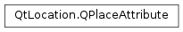

QPlaceAttribute¶
Synopsis¶
Detailed Description¶
The
PySide2.QtLocation.QPlaceAttributeclass represents generic attribute information about a place.A
PySide2.QtLocation.QPlaceAttributeinstance stores an additional piece of information about a place that is not otherwise exposed through thePySide2.QtLocation.QPlaceclass. APySide2.QtLocation.QPlaceAttributeencapsulates a localized label which describes the attribute and rich text string representing the attribute’s value. Generally, both are intended to be displayed to the end-user as is.Some plugins may not support attributes at all, others may only support a certain set, others still may support a dynamically changing set of attributes over time or even allow attributes to be arbitrarily defined by the client application. The attributes could also vary on a place by place basis, for example one place may have opening hours while another does not. Consult the plugin references for details.
Attribute Types¶
The
PySide2.QtLocation.QPlaceAttributeclass defines some constant strings which characterize standard attribute types .
- QPlaceAttribute::OpeningHours
- QPlaceAttribute::Payment
- QPlaceAttribute::Provider
There is a class of attribute types of the format x_id_<provider> for example x_id_here. This class of attributes is a set of alternative identifiers of the place, from the specified provider’s perspective.
The above types are used to access and modify attributes in
PySide2.QtLocation.QPlacevia:
QPlace.extendedAttribute()QPlace.setExtendedAttribute()QPlace.removeExtendedAttribute()QPlace.removeExtendedAttribute()The attribute type is a string type so that providers are able to introduce new attributes as necessary. Custom attribute types should always be prefixed by a qualifier in order to avoid conflicts.
User Readable and Non-User Readable Attributes¶
Some attributes may not be intended to be readable by end users, the label field of such attributes are empty to indicate this fact.
-
class
PySide2.QtLocation.QPlaceAttribute¶ -
class
PySide2.QtLocation.QPlaceAttribute(other) Parameters: other – PySide2.QtLocation.QPlaceAttributeConstructs an attribute.
Creates a copy of
other.
-
PySide2.QtLocation.QPlaceAttribute.OpeningHours¶
-
PySide2.QtLocation.QPlaceAttribute.Payment¶
-
PySide2.QtLocation.QPlaceAttribute.Provider¶
-
PySide2.QtLocation.QPlaceAttribute.isEmpty()¶ Return type: PySide2.QtCore.boolReturns a boolean indicating whether the all the fields of the place attribute are empty or not.
-
PySide2.QtLocation.QPlaceAttribute.label()¶ Return type: unicode Returns a localized label describing the attribute.
-
PySide2.QtLocation.QPlaceAttribute.__ne__(other)¶ Parameters: other – PySide2.QtLocation.QPlaceAttributeReturn type: PySide2.QtCore.boolReturns true if
otheris not equal to this attribute, otherwise returns false.
-
PySide2.QtLocation.QPlaceAttribute.__eq__(other)¶ Parameters: other – PySide2.QtLocation.QPlaceAttributeReturn type: PySide2.QtCore.boolReturns true if
otheris equal to this attribute, otherwise returns false.
-
PySide2.QtLocation.QPlaceAttribute.setLabel(label)¶ Parameters: label – unicode Sets the
labelof the attribute.
-
PySide2.QtLocation.QPlaceAttribute.setText(text)¶ Parameters: text – unicode Sets the
textof the attribute.
-
PySide2.QtLocation.QPlaceAttribute.text()¶ Return type: unicode Returns a piece of rich text representing the attribute value.
© 2018 The Qt Company Ltd. Documentation contributions included herein are the copyrights of their respective owners. The documentation provided herein is licensed under the terms of the GNU Free Documentation License version 1.3 as published by the Free Software Foundation. Qt and respective logos are trademarks of The Qt Company Ltd. in Finland and/or other countries worldwide. All other trademarks are property of their respective owners.